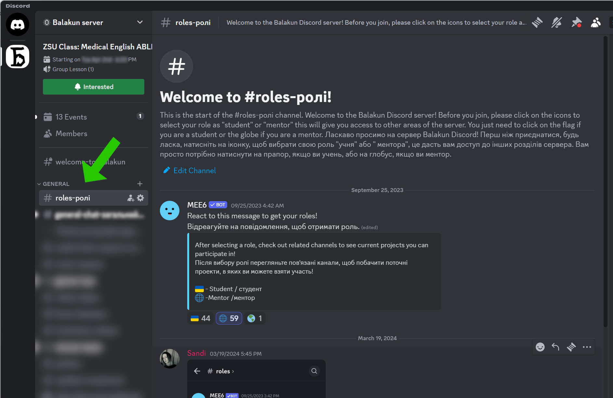
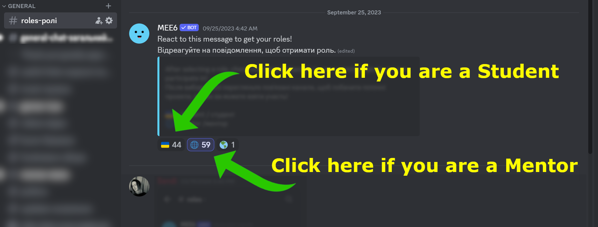
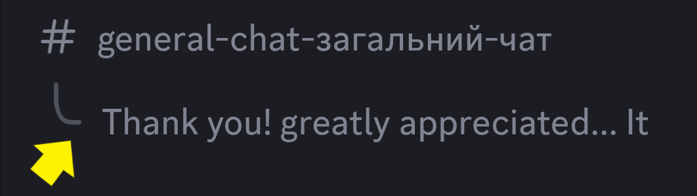
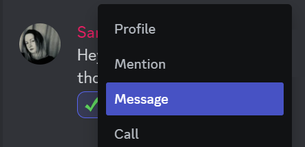
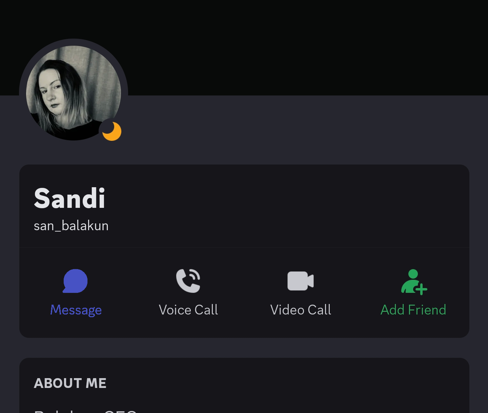
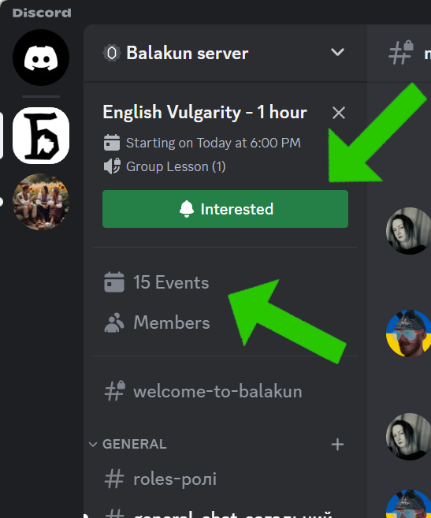
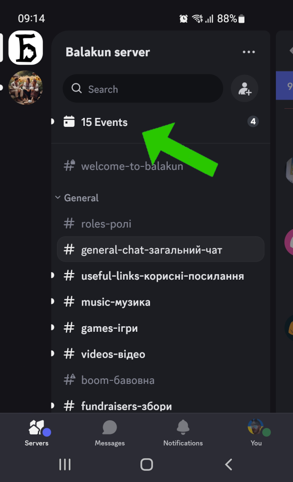
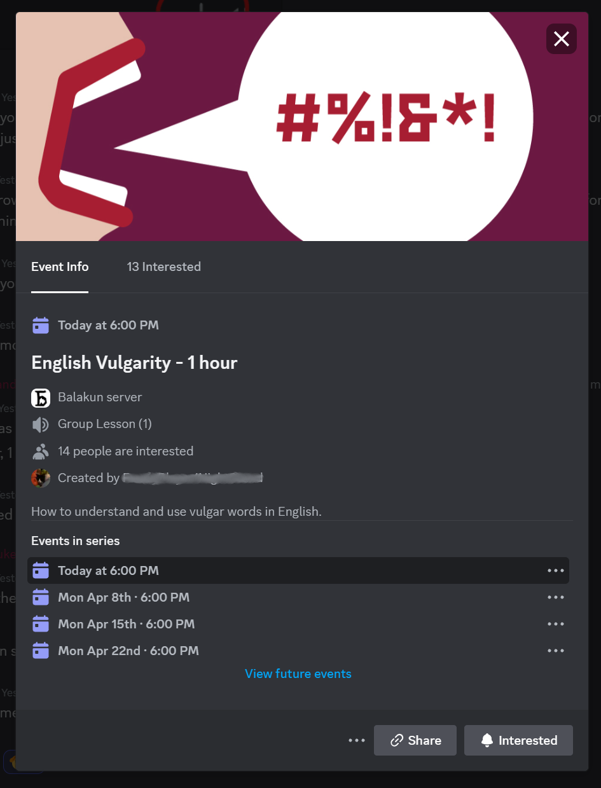
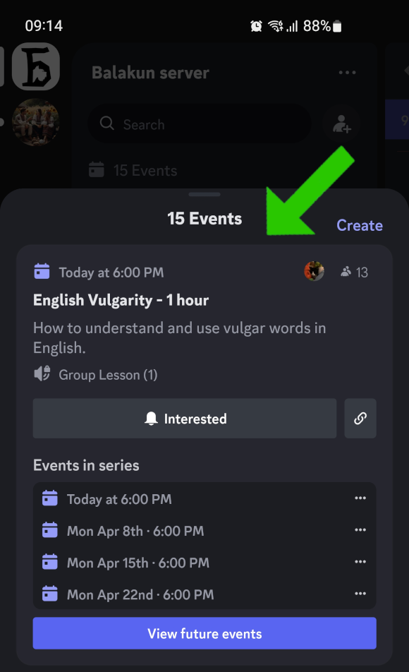

Discord is a free digital platform that combines aspects of social media, chat rooms, and video conferences into one.
It's designed to help people with common interests connect through voice, video, and text communication. Users can join "servers" — think of them as community-led discussion groups — to talk about various topics, share files, and even stream video content.
Getting Started with Discord
You can use Discord across all your devices: on the go with mobile apps for Android and iPhone, at your desk via the desktop app for PC and Mac, or directly in any web browser for quick access without installing anything.
Create an account on discord.com or through the app.
When you create an account, you will select a username (this name will be how people will know you on Discord), and you can add an image to represent yourself (a profile picture or avatar).
A server on Discord is like a private clubhouse or meeting room online where people with similar interests can talk, share pictures, and even make voice or video calls together, all organized into different sections for various topics.
Usually you need an invite link to join a server. For example this link is to join the Balakun server: https://discord.gg/Hm2aC9BxRT
Each server has a name and an icon. For example, the Balakun server looks like this: (desktop version)
(mobile version)
Once you have joined a server, you will see a list of sections - called "channels". Channels on Discord are like individual rooms within a server, each dedicated to a specific topic or type of conversation, where you can chat, share files, or voice call.
It is very important that you get your own role when joining the Balakun server.
You can be either Student or Mentor.
Go to the # Roles-ролі channel of the Blakun server:

And then click on the Ukrainian flag or the World icon depending if you are a student or a mentor:

Express yourself with thousands of emojis available on Discord, or use server-specific custom emojis for more personalized reactions.
To add an emoji you have to select the message and then use the icon:
Share images, documents, and more by attaching files directly to your messages, making collaboration and sharing easy.
Just drag and drop the image on Widnows application or use the on mobile.
Keep conversations organized by starting or participating in threads — focused discussions under a main message, ideal for side conversations without cluttering the main chat.
To create a new thread select the startng message and then use the button
You can see that a thread is available if you see this specific situation:

For more private conversations, use DMs to chat with friends or colleagues directly, outside of servers.
To send a direct message, hold (mobile) or right click (desktop) on the name of the user you want to send a message and type the text.
Desktop
Mobile
Join voice channels to talk live with others, share your screen, or even host virtual meetings, gaming sessions, and more.
On mobile usually microphone and speakers are configured automatically. Very often also on Windows desktop, in case you have more than 1 microphone you may want to set it up in the preferences of Discord. NOTE: The browser version of Discord has often problems with microphones but you can still listen to voice channels. We recommend the desktop version and the mobile versions.
Participate in or create scheduled events within servers, such as game nights, study groups, or online gatherings, complete with reminders and RSVPs.
Events can be found at the very top of the server:
Desktop
Mobile
If you click on the event you can see the details:
Desktop
Mobile
All times for the events are in your local time zone. Discord will update the time for the event according to your local time.
If you are interested in an event, just click on the Interested button of the event. Discord will remind you that the event will be happening with a notification.
Once the event is started you will see a Join button that will bring you to the channel where the event is happening.

 (desktop version)
(desktop version) (mobile version)
(mobile version)